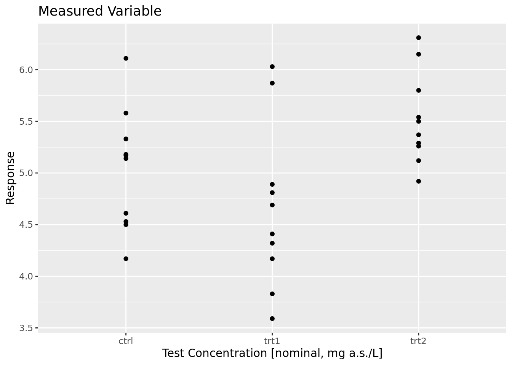

library(drcHelper)
#> Loading required package: drc
#> Loading required package: MASS
#>
#> Attaching package: 'MASS'
#> The following object is masked from 'package:dplyr':
#>
#> select
#> Loading required package: drcData
#>
#> 'drc' has been loaded.
#> Please cite R and 'drc' if used for a publication,
#> for references type 'citation()' and 'citation('drc')'.
#>
#> Attaching package: 'drc'
#> The following objects are masked from 'package:stats':
#>
#> gaussian, getInitialA Note on Statistical Power
Collection of Notes on MM
Concepts
Certainly! In statistical analysis, tests can be categorized as liberal or conservative based on their propensity to reject the null hypothesis. Here are examples of both types of tests:
Liberal Tests
- Least Significant Difference (LSD) Test:
- Used for pairwise comparisons following ANOVA.
- Does not adjust for multiple comparisons, making it more prone to Type I errors.
- Unadjusted t-tests for Multiple Comparisons:
- Performing multiple t-tests without any correction for multiple testing increases the chance of Type I errors.
- Chi-Square Test Without Yates’ Continuity Correction:
- In small sample sizes, not applying Yates’ continuity correction can make the test more liberal.
Conservative Tests
- Bonferroni Correction:
- Adjusts the significance level for multiple comparisons by dividing the alpha level by the number of tests.
- Reduces the likelihood of Type I errors but can be overly conservative, increasing the risk of Type II errors.
- Tukey’s Honest Significant Difference (HSD) Test:
- Used for multiple comparisons following ANOVA.
- Controls the family-wise error rate, making it more conservative than LSD.
- Holm-Bonferroni Method:
- A stepwise approach to control the family-wise error rate.
- Less conservative than Bonferroni but still provides strong control over Type I errors.
- Yates’ Continuity Correction for Chi-Square Tests:
- Applied to 2x2 contingency tables to make the test more conservative, especially with small sample sizes.
Implications of Choosing Liberal vs. Conservative Tests
Liberal Tests: These are useful when the primary concern is maximizing the power to detect differences, and the cost of Type I errors is low. However, they should be used with caution when multiple comparisons are involved.
Conservative Tests: These are preferred when controlling for Type I errors is crucial, such as in confirmatory studies where false positives could lead to incorrect scientific conclusions. However, they may increase the risk of Type II errors, potentially missing true effects.
Choosing between liberal and conservative tests depends on the research context, study design, and the balance between Type I and Type II error risks. Researchers should carefully consider these factors when selecting statistical methods for their analyses.
Nonparametric Tests
library(SimEngine)
### NULL HYPOTHESIS: Theta=0 ###
n_x=200 # Sample size under Null Hypothesis
mu_x=0 # Sample mean under Null Hypothesis
sigma_x=3 # Sample deviation under Null Hypotesis
### ALTERNATIVE HYPOTHESIS: Theta>0 ###
tmu_y=100 # Number of means under Alternative Hypothesis
mu_y=seq(-2, 2, length=tmu_y) # Means under Alternative Hypothesis
sigma_y=3 # Deviation under Alternative Hypothesis
prob_rechazo_wilcoxon=NULL # Power of Wilcoxon Test
prob_rechazo_stest=NULL # Power of Sign Test
tsim=1000 # Simulation size
for (j in 1: tmu_y)
{
valorP_stest=NULL # P value Sign Test
valorP_wilcoxon=NULL # P value Wilcoxon Test
for (i in 1:tsim)
{
x=rnorm(n_x, mu_x, sigma_x)
stest=SIGN.test(x, y=NULL, alternative = "less", md = 0, conf.level = 0.95)
valorP_stest[i]=stest$p.value
wtest=wilcox.test(x, y=NULL, alternative = "less", mu = 0, conf.level = 0.95)
valorP_wilcoxon[i]=wtest$p.value
}
prob_rechazo_stest[j]=sum(ifelse(valorP_stest<0.05,1,0))/tsim
prob_rechazo_wilcoxon[j]=sum(ifelse(valorP_wilcoxon<0.05,1,0))/tsim
}
cbind(prob_rechazo_stest, prob_rechazo_wilcoxon)
plot (mu_y,prob_rechazo_stest, type="l", col=2, main="Power",ylab="",xlab="")
lines(mu_y,prob_rechazo_wilcoxon, type="l", col=4)Power are different
library(PMCMRplus)
#>
#> Attaching package: 'PMCMRplus'
#> The following object is masked from 'package:drcData':
#>
#> algae
## Data set PlantGrowth
## Global test
prelimPlot1(PlantGrowth %>% mutate(Dose=group,Response=weight))
kruskalTest(weight ~ group, data = PlantGrowth)
#> Warning in kruskalTest.default(c(4.17, 5.58, 5.18, 6.11, 4.5, 4.61, 5.17, :
#> Ties are present. Quantiles were corrected for ties.
#>
#> Kruskal-Wallis test
#>
#> data: weight by group
#> chi-squared = 7.9882, df = 2, p-value = 0.01842
## Conover's many-one comparison test
## single-step means p-value from multivariate t distribution
ans <- kwManyOneConoverTest(weight ~ group, data = PlantGrowth,
p.adjust.method = "single-step")
#> Warning in kwManyOneConoverTest.default(c(4.17, 5.58, 5.18, 6.11, 4.5, 4.61, :
#> Ties are present. Quantiles were corrected for ties.
summary(ans)
#>
#> Pairwise comparisons using Conover's many-to-one test
#> data: weight by group
#> alternative hypothesis: two.sided
#> P value adjustment method: single-step
#> H0
#> t value Pr(>|t|)
#> trt1 - ctrl == 0 -1.267 0.35507
#> trt2 - ctrl == 0 1.915 0.11735
#> ---
#> Signif. codes: 0 '***' 0.001 '**' 0.01 '*' 0.05 '.' 0.1 ' ' 1
## Conover's many-one comparison test
ans <- kwManyOneConoverTest(weight ~ group, data = PlantGrowth,
p.adjust.method = "holm")
#> Warning in kwManyOneConoverTest.default(c(4.17, 5.58, 5.18, 6.11, 4.5, 4.61, :
#> Ties are present. Quantiles were corrected for ties.
summary(ans)
#>
#> Pairwise comparisons using Conover's many-to-one test
#> data: weight by group
#> alternative hypothesis: two.sided
#> P value adjustment method: holm
#> H0
#> t value Pr(>|t|)
#> trt1 - ctrl == 0 -1.267 0.21597
#> trt2 - ctrl == 0 1.915 0.13230
#> ---
#> Signif. codes: 0 '***' 0.001 '**' 0.01 '*' 0.05 '.' 0.1 ' ' 1
## Dunn's many-one comparison test
ans <- kwManyOneDunnTest(weight ~ group, data = PlantGrowth,
p.adjust.method = "holm")
#> Warning in kwManyOneDunnTest.default(c(4.17, 5.58, 5.18, 6.11, 4.5, 4.61, :
#> Ties are present. z-quantiles were corrected for ties.
summary(ans)
#>
#> Pairwise comparisons using Dunn's many-to-one test
#> data: weight by group
#> alternative hypothesis: two.sided
#> P value adjustment method: holm
#> H0
#> z value Pr(>|z|)
#> trt1 - ctrl == 0 -1.118 0.26368
#> trt2 - ctrl == 0 1.689 0.18233
#> ---
#> Signif. codes: 0 '***' 0.001 '**' 0.01 '*' 0.05 '.' 0.1 ' ' 1
## Nemenyi's many-one comparison test
ans <- kwManyOneNdwTest(weight ~ group, data = PlantGrowth,
p.adjust.method = "holm")
#> Warning in kwManyOneNdwTest.default(c(4.17, 5.58, 5.18, 6.11, 4.5, 4.61, : Ties
#> are present. p values are not corrected.
summary(ans)
#>
#> Pairwise comparisons using Nemenyi-Damico-Wolfe many-to-one test
#> data: weight by group
#> alternative hypothesis: two.sided
#> P value adjustment method: holm
#> H0
#> z value Pr(>|z|)
#> trt1 - ctrl == 0 -1.118 0.26374
#> trt2 - ctrl == 0 1.689 0.18240
#> ---
#> Signif. codes: 0 '***' 0.001 '**' 0.01 '*' 0.05 '.' 0.1 ' ' 1
## Many one U test
ans <- manyOneUTest(weight ~ group, data = PlantGrowth,
p.adjust.method = "holm")
summary(ans)
#>
#> Pairwise comparisons using Wilcoxon, Mann, Whittney U-test
#> for multiple comparisons with one control
#> data: weight by group
#> alternative hypothesis: two.sided
#> P value adjustment method: holm
#> H0
#> z value Pr(>|z|)
#> trt1 - ctrl == 0 -1.323 0.18571
#> trt2 - ctrl == 0 1.890 0.11756
#> ---
#> Signif. codes: 0 '***' 0.001 '**' 0.01 '*' 0.05 '.' 0.1 ' ' 1
## Chen Test
ans <- chenTest(weight ~ group, data = PlantGrowth,
p.adjust.method = "holm")
summary(ans)
#>
#> Pairwise comparisons using Chen's test
#> for multiple comparisons with one control
#> data: weight by group
#> alternative hypothesis: greater
#> P value adjustment method: holm
#> H0
#> T* value Pr(>T*)
#> mu1 - crt <= 0 -1.323 0.9071444
#> mu2 - crt <= 0 2.596 0.0094332 **
#> ---
#> Signif. codes: 0 '***' 0.001 '**' 0.01 '*' 0.05 '.' 0.1 ' ' 1References
- The Abuse of Power: https://www.tandfonline.com/doi/abs/10.1198/000313001300339897#preview
- SIMR: power analysis for GLMM https://besjournals.onlinelibrary.wiley.com/doi/10.1111/2041-210X.12504